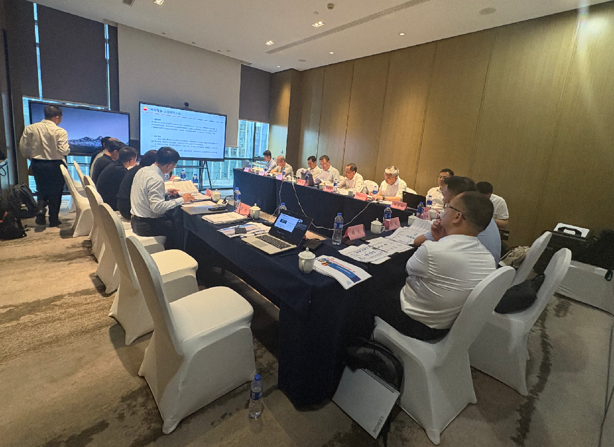
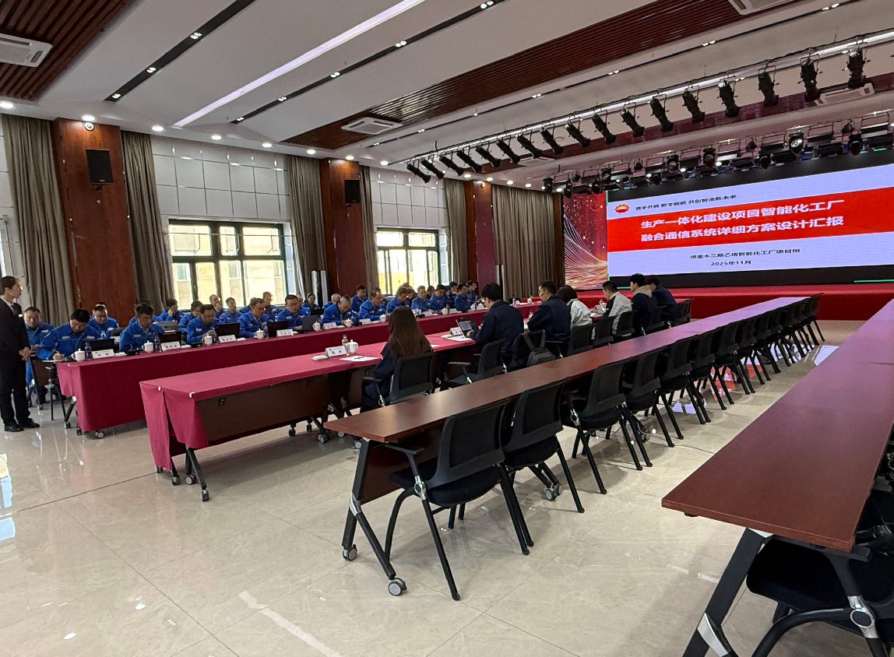
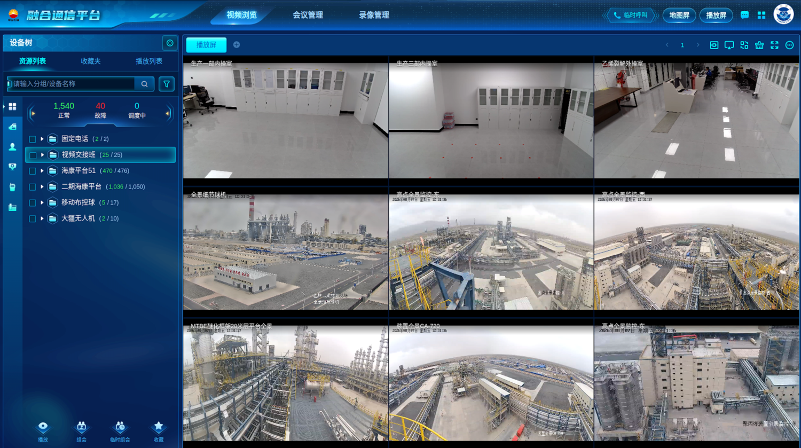
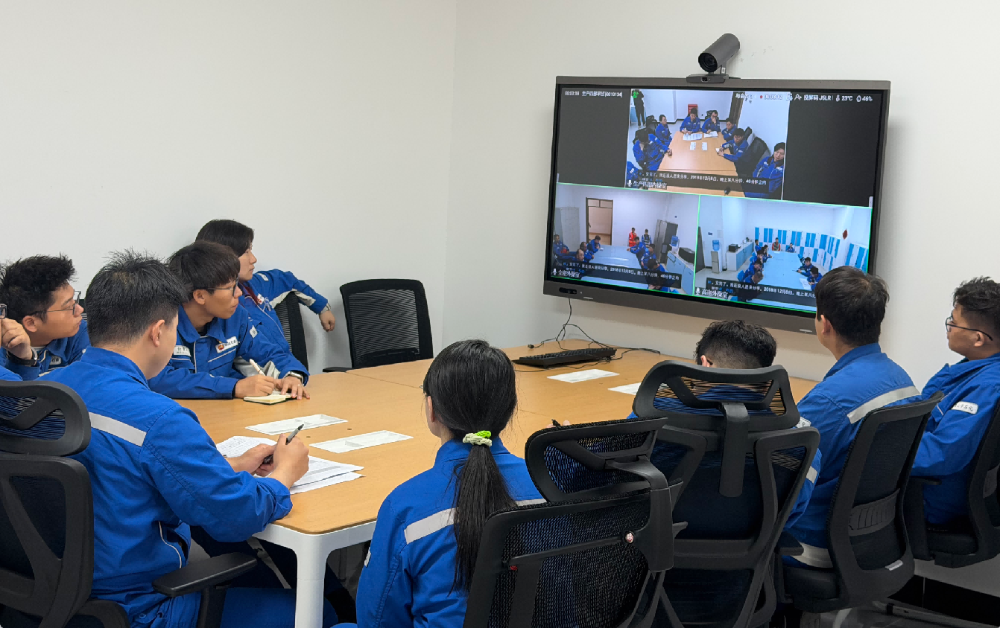
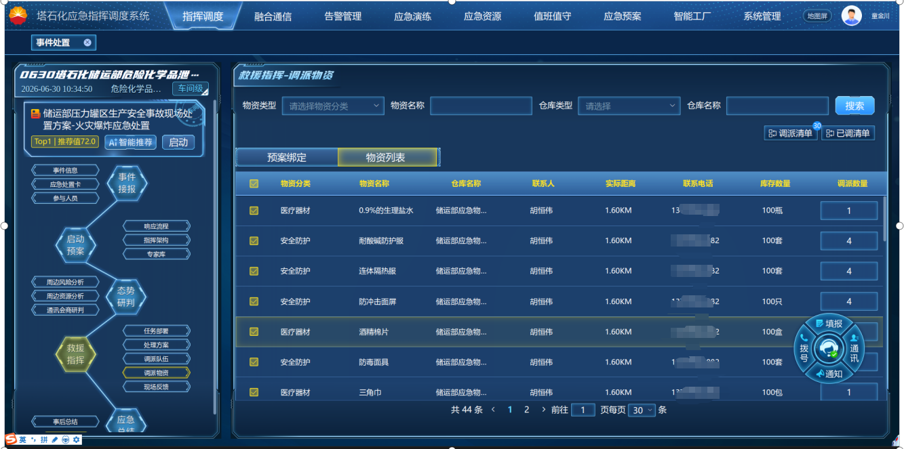
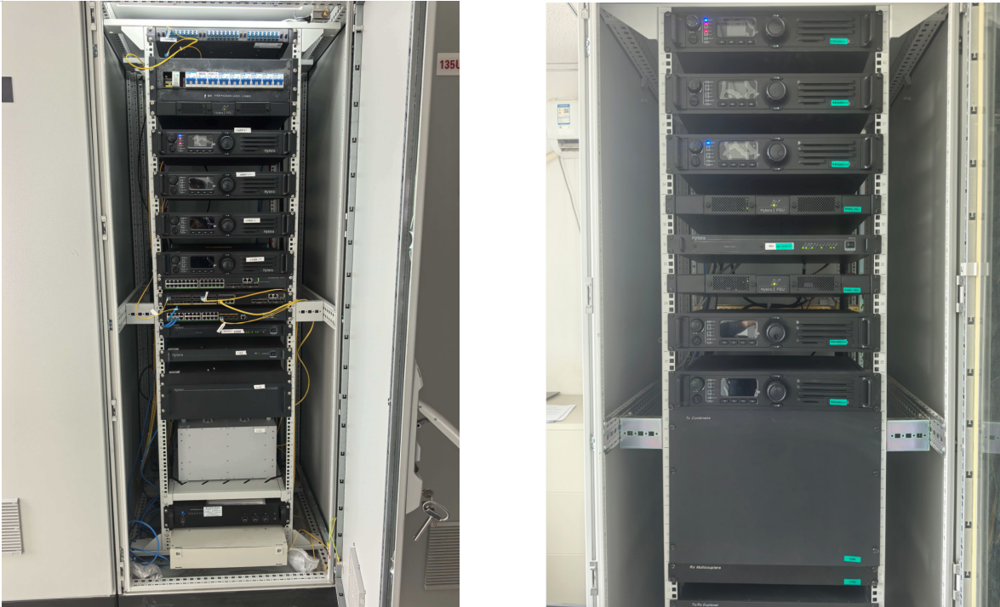
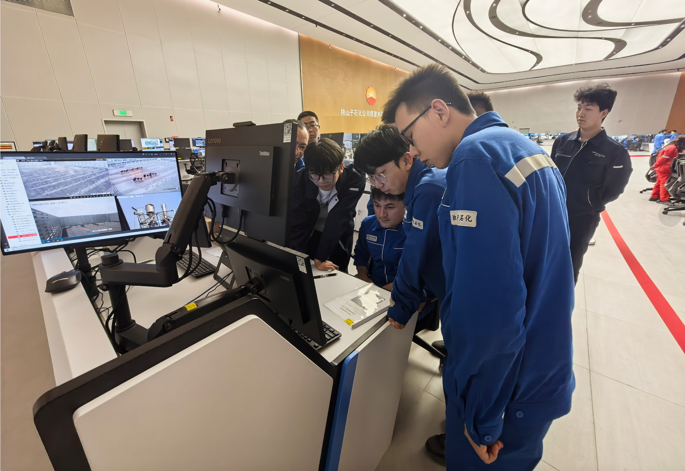
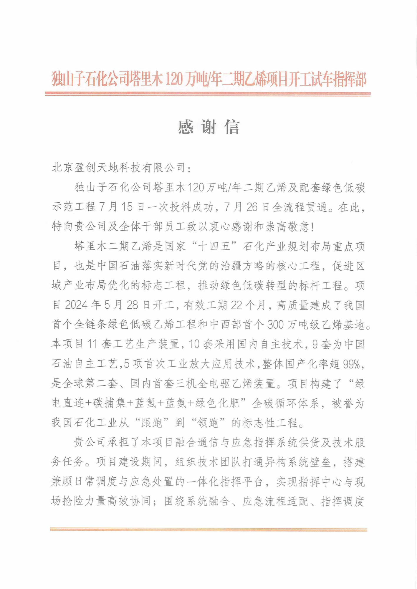
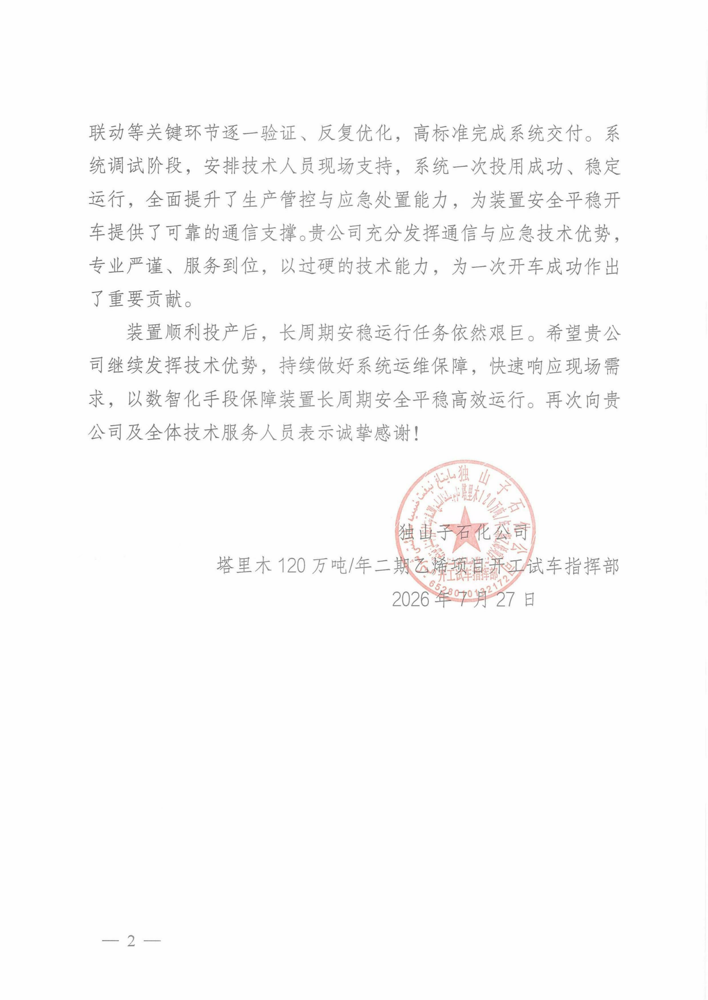

初回の原料投入に成功し、全工程が稼働。盈創天地のデジタルシステムがタリム第2期エチレン事業の操業開始を支援公開時間: 2026-08-10 10:31 最近、東盈創世 株式会社は都山子石油化学会社タリム社の買収を完了しました。年間120万トンのエチレンプロジェクト第2期試運転本部より感謝状。この書簡は、プロジェクトの統合通信および緊急指令システムの建設、試運転、生産サポート段階におけるYingchuang Tiandiの専門能力とサービス精神を完全に確認したものである。 2026 年 7 月 15 日、タリムの年間 120 万トンの第 2 段階エチレンとそれを支援するグリーン低炭素実証プロジェクトは、最初の供給を成功裡に完了しました。同年に7月26日プロジェクト完了プロセス全体がつながっています。 このプロジェクトのスマートファクトリー構築の中核コンポーネントとして、Yingchuang Tiandiが構築した統合通信および緊急指令システムは初めて使用に成功し、安定して運用され、デバイスの安全で安定した運用のための信頼できる通信サポートと緊急保証を提供しました。 国家の重要プロジェクトに対するデジタルかつインテリジェントなサポートタリム第Ⅱ期エチレンプロジェクトは国家的プロジェクトである「第14次5カ年計画」石油化学産業の計画と配置のペトロチャイナにとって、地域の産業配置を最適化し、グリーンで低炭素な変革を促進するための主要プロジェクトも重要です。コアエンジニアリング。プロジェクトイン建設は 2024 年 5 月 28 日に開始されます。建設工期中国初のフルチェーンのグリーン低炭素エチレンプロジェクトが22か月で高品質に完了、そして中西部で初めて300万トンのビニール床材。  プロジェクト始めると建設計画の連絡 大規模な石油化学プラントは、対象範囲が広く、関連システムが多く、業務構成が複雑であるという特徴があります。従来のモデルでは、管理用電話、派遣電話、ワイヤレス インターホン、ビデオ監視、およびビジネス データが互いに独立しており、情報の島を容易に形成できます。特にデバイスにおいてドライブ緊急事態に対処する過程において、指令所が現場の状況をいかに迅速に把握し、出動指示を前線に正確に伝えるかは、安全な生産を確保するための重要な課題です。 周りのデマンド、インチュアン・ティアンディ「統合アクセス、統合派遣、平時と戦時の組み合わせ、共同処理」は、インテリジェントな工場生産のための統合通信および緊急指令システムを構築するための構築アイデアです。  詳細設計計画レポートのレビュー 4 つの主要システムの連携: 統合生産通信および緊急指令システムの構築コンバージドコミュニケーション：分散型システムの相互接続を実現 ベンこのプロジェクトには、管理用電話、派遣電話、ワイヤレスインターホン、ビデオ監視、防爆インテリジェント端末、GIS マップ、包括的なエンタープライズ データベース、CNPC インスタント メッセージングとSMSゲートウェイなど全種類リソースは統合プラットフォームに接続され、音声、ビデオ、データを実現しますとロケーションリソースの統合スケジューリング。 システムエンタープライズ総合データベースから同期する1169件の従業員ID情報、アクセスプロジェクトフェーズI476道路、フェーズ II1050道路演出ビデオ、ドローンやモバイルボールコントロールなど、ガスクラウド イメージングなどのライブ ビデオ リソース。ディスパッチャは、ディスパッチ コンソールまたはモバイル端末を通じて、音声通話、ビデオ レビュー、集中会議、緊急グループ通話、およびマップ フレーム選択ディスパッチを完了できます。と現場の写真とテキストによるレポート。  オーディオおよびビデオリソースの統合スケジューリング 従来は複数のシステム間で切り替えを繰り返していた業務を、統一された操作インターフェース上で完結できるようになりました。生産スケジューリング、現場チーム、安全管理、物流サポートなどの複数部門の部隊がリアルタイムでの情報共有、同期的な状況分析と判断、協調的なタスクの実行を実現し、生産コミュニケーションを促進します。「分散コミュニケーション」から「統合ディスパッチ」へ。 ビデオ引き継ぎ: オフラインからオンラインへの本番引き継ぎの変革を促進します。 生産装置の引き継ぎ現場に着目し、ビデオ引き継ぎシステムを構築し、社内の会議室に派遣したプロジェクト、それぞれの制作物部門会議端末は社内外の手術室に設置されています。 このシステムは、朝と夜のシフト会議テンプレート、スケジュールされた自動グループ会議、および複数のグループ会議の同時実行をサポートしています。顔によるサインイン、電子名札、会議の録画、会議コンテンツのエクスポートなどの機能を提供できます。  ビデオハンドオーバーシステムの実用的な適用シナリオ 引き継ぎ担当者は、異なるデバイス間を移動する必要がなくなりました。コマンドセンターは各部門の引き継ぎ状況を遠隔監視でき、重要な情報をプロセス全体に記録することができ、生産管理、責任追跡、レビュー分析をデータでサポートします。 緊急指令：構築する共同処理システム「One Picture」 緊急指令システムは、当直、緊急計画、緊急チーム、緊急物資、監視と早期警報、任務の派遣、スケジュール設定交渉すると総括評価などいっぱい事業セグメント。 プラットフォームに統合された勤務スケジュール、AI による隠れた危険の特定、人員の配置、ガス雲のイメージング、スマート ロッカー、ツイン工場の 3D モデル、その他のデータ。異常な状況が発生した場合、システムはポップアップ ウィンドウ、音声、インスタント メッセージングのメッセージ プッシュを通じて階層的なアラームを実行できます。 隠れた重大な危険の警告については、勤務担当者が情報の確認を完了すると、勤務中のリーダーと関連する緊急担当者を迅速に照合し、グループ通話通知を開始し、現場のビデオを取得し、周囲の人員と物資の配置を確認し、緊急ワンマップ インターフェイスで協力的な対応を組織することができます。  緊急コマンド システムのビジネス プロセスとリソース管理インターフェイス このシステムは企業レベルと生産省庁レベルの両方の緊急事態をカバーし、インシデントの報告と情報収集を実現できます。集まって、全体的な管理、人事通知、リソースのスケジュール設定、タスクの実行といったプロセス全体が、企業の目標を達成するためにつながっています。「応答に 1 分、到着に 3 分、対応に 5 分」緊急対応目標はデジタル サポートを提供することです。 クラスターインターホン｜現場での継続的なコミュニケーションを確保安定した信頼できる このプロジェクトでは、国内クラスター インターコム システムを導入し、デュアル基地局ネットワークを通じて補完的な信号カバレッジとシームレスなローミングを実現します。現場の担当者が基地局間を移動する場合、端末は自動的に切り替えを完了し、モバイル運用全体を通じて継続的で中断のない通信を保証します。 このシステムはオリジナルの機器と互換性があり、古いものを活用するKelixunやMotorolaなどの異なるブランドの既存端末と接続し、統一的に計画・設定が可能13 のインターコム グループにより、マルチブランド機器の相互接続、集中録画、統一スケジュールが可能になります。  本プロジェクトで導入したクラスターインターホン基地局装置 このプロジェクトは、通信範囲と運用の信頼性を向上させながら、既存の設備投資を効果的に保護し、システムのアップグレードと変革のコストを削減し、日常の生産運用と緊急コマンドの安定性を提供します。、信頼できる、保証されています無線通信保証。 システムの納品から機器の立ち上げサポートまで、全工程にわたって担当者が常駐します。プロジェクトの構築段階で、Yingchuang Tiandi の技術チームは、システム統合、緊急プロセスの適応、指揮と派遣の連携などの主要なリンクを中心に複数回の検証と最適化作業を実施し、高水準のシステム提供タスクを完了しました。 システムのデバッグとデバイスの起動段階に入った後、プロジェクト チームは専門的および技術的な要員を現場に常駐させ、ユーザーの操作トレーニングを実施し、さまざまなビジネス ニーズにタイムリーに対応し、システムの動作状況を継続的にチェックし、主要な通信機能と緊急機能が安定して利用可能であることを確認しました。  技術担当者が現場で研修やシステム操作指導を実施 「プロフェッショナルかつ厳格で、綿密なサービスと優れた技術力を備えています。デバイスドライブの成功に大きく貢献してください。” 試運転本部は感謝状の中で、Yingchuang Tiandiの仕事ぶりと技術的能力を高く評価し、装置の立ち上げ成功に対する同社の重要な貢献を全面的に認めた。 お客様からの肯定  デジタル インテリジェンス機能を使用して、安全な生産のための強固な防御線を構築します初めてのデバイスへの給電の成功とプロセス全体のスムーズな統合は、プロジェクトの参加者全員の共同の努力の結果です。これは、システムの安定性とオンサイト サポート機能の包括的なテストでもあります。プロジェクトが実稼働に入った後も、インチュアン ワールドはシステムの運用と保守、機能の最適化において優れた仕事を続け、現場のニーズに迅速に対応し、実稼働運用における統合通信、インテリジェント ハンドオーバー、緊急コマンド、およびワイヤレス クラスター機能の継続的な価値を推進していきます。 今後も、インチュアンワールドは、より信頼性の高い製品と専門技術を提供して、エネルギーと化学産業を掘り下げていきます。と堅実なサービスで企業に安全な生産と緊急事態管理を提供とデジタルトランスフォーメーションを強力にサポートします。 東盈創世 株式会社｜通信・緊急指令統合製品ライン： |